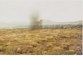
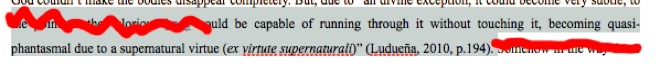
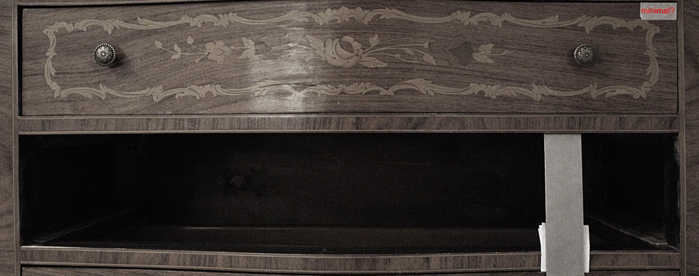
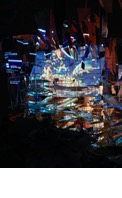
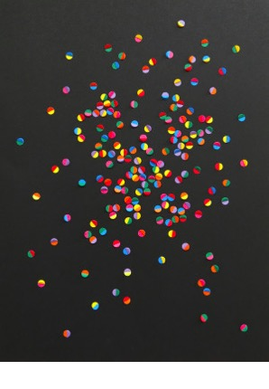
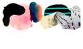

sparks sparks sparks
"the urge towards the
future [is] based upon an appetite in the present:"
“the immediate goal is to procure." (Process and Reality,
32)
crossing different planes, sparks ignite transversal appetites
shifting modes
carrying feeling across
...
“entities that are beginnings, rough sketches, monuments that don’t exist and maybe will never do”. This doesn’t mean that they aren’t real, and even if they fail to actualize they will continue to act upon the disposition of the actual bodies.[1] But they’re sparks that sometimes last less than a blink of an human eye.


tiny existences
 event decisions!